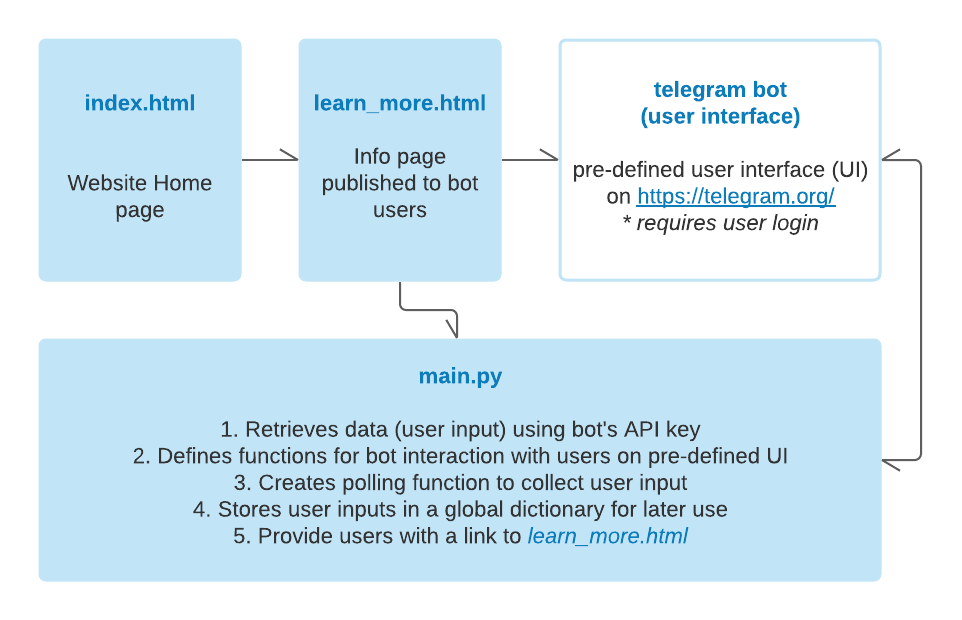

Depression is a common mental health disease. According to the World Health Organization, 264 million people suffer from depression globally. The population with the highest percentage of experiencing symptoms of depression falls in the group of 18-29 years old. Among this demographic, suicide is the second leading cause of death. Some of us have lost friends to depression. Even though there is a growing awareness of mental health, depression is still heavily stigmatized. Less than one-third of individuals with depression actually seek help from professional treatment.
Social media is one of the easiest ways to reach the younger generation today, and sometimes these platforms are preferred when they need to talk to someone. By building a chat bot instead of using a formal screen, we want to reduce the discomfort associated with a depression screen. It is also accessible at any time of the day. However, this tool is only a rough preliminary diagnosis. We highly encourage users to seek mental health professionals after talking to our chatbot. Our ultimate goal is to reduce the stigma associated with depression, help them learn about the symptoms and encourage individuals to seek help.
Information to guide you through our project can be found here:
README
Implementation information

Results
This is a short video on how our bot works.
Project evolution
The process began with preliminary research on available tools that can be used to accomplish our goal. The chosen communication platform we chose was Telegram given its simple user interface and implementation. We then turned to multiple Youtube tutorials to learn how Telegram bots work and what are the required algorithms needed in order to create the desired outcome. Our initial idea was to create a bot that converses with users, sending one question at a time, hoping to best replicate a human conversation. We started with an API called Telepot. It allowed us to receive messages and send a reply to them. This is done by having a function to get the latest chat_id, and a main function that takes in the chat_id and other information and handles different messages. However, after our research, this API does not have the methods that enable us to separate our questions 1 by 1.
However, as we faced implementation challenges, we shifted towards a different method in executing our survey questions, that is, via a voting poll. We consulted sources from Youtube and Github to create multiple functions having to do with responding to user commands (/start, /help, etc.) and defined a yes/no poll that collects user inputs into a python dictionary for later use. Along the way, we made altercations to each function in order to serve our original purpose. For instance, we set a threshold of 30% yes answers for those who may want to seek professional help. As a result, we arrived at our final product. The evolution of our program can be seen below.